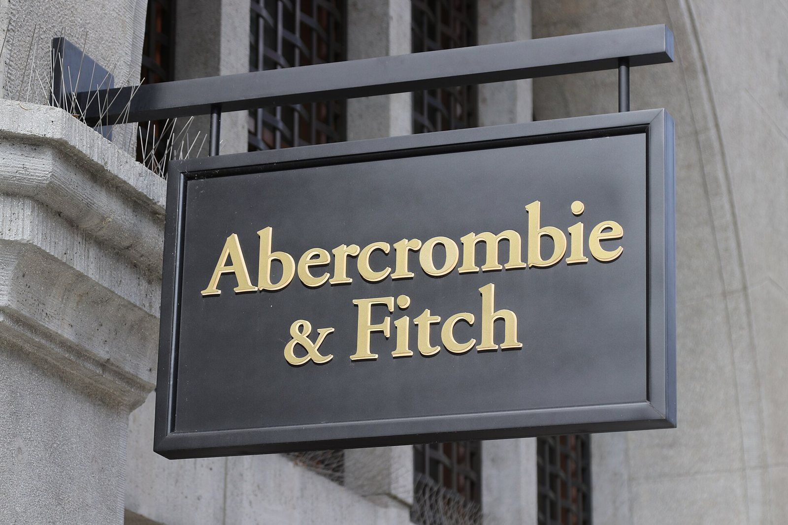

Il rally di Huang dura un giorno: chip −7,9, ma il Dow sale. Una divergenza vista quasi solo nel 2000
Il rimbalzo di lunedì si sgonfia dove era nato: i semiconduttori. Ma Wall Street non crolla, si sposta: dai chip ai negozi, dalla tecnologia ai farmaci. È un movimento che il mercato americano ha visto raramente, e quasi sempre negli anni della bolla di Internet.

In sintesi
- Chip −7,88%, Nvidia −5,86%, Nasdaq −1,48%: più di metà del rimbalzo dei chip di lunedì è già sparita.
- Il Dow sale dello 0,85%: dal 1992 era successo solo 11 volte con il Nasdaq così in calo, 9 nel 1999-2001.
- Pesano le critiche dei due partiti al ritorno di Huang e i conti di Analog Devices (−17,4%).
- Volano i negozi: Abercrombie +19,7%, Kohl's +19,5%, Dollar Tree +11,2%.
- In Asia, che lunedì era chiusa o aveva già chiuso, Taiwan fa +9,0%: il secondo giorno migliore dal 1997.
Il rialzo di lunedì è durato una seduta. L'indice dei semiconduttori SOX perde il 7,88%, Nvidia il 5,86% a 155,38 dollari e il Nasdaq Composite l'1,48% a 23.733,53 punti. Ma la Borsa americana non scende in blocco: il Dow Jones guadagna lo 0,85% e chiude a 50.018,70 punti, l'S&P 500 cede solo lo 0,50%. Gli investitori hanno venduto i chip e comprato negozi, farmaci e beni di consumo, il giorno dopo il miglior giorno dall'aprile 2025.
La chiusura
| Indice | Chiusura | Giorno |
|---|---|---|
| Nasdaq Composite | 23.733,53 | −1,48% |
| Nasdaq 100 | 26.214,17 | −1,99% |
| S&P 500 | 7.201,09 | −0,50% |
| Dow Jones | 50.018,70 | +0,85% |
| Russell 2000 | 2.684,94 | +0,57% |
| Semiconduttori (SOX) | 8.832,50 | −7,88% |
| VIX | 26,36 | −0,98% |
Rispetto a venerdì sera il bilancio resta positivo: Nvidia è ancora sopra del 23,8% e l'indice SOX del 5,0%. Ma lunedì l'indice dei chip aveva messo a segno il quarto rialzo giornaliero più forte dal 1994 (+14,03%), e oggi ne ha restituito più della metà. Dal 1994 il SOX aveva guadagnato almeno il 10% in un giorno 20 volte; solo quattro volte il giorno dopo aveva perso più del 5%: il 16 ottobre 2000, il 6 aprile 2001, il 16 marzo 2020 e il 10 aprile 2025. Oggi è la quinta.
Perché i chip sono tornati giù
Il ritorno di Huang divide Washington. Secondo 24/7 Wall St., ripreso da Yahoo Finance, il reintegro di Jensen Huang alla guida di Nvidia è criticato da repubblicani e democratici, che contestano il ruolo di Donald Trump nella decisione; SEC, FBI e dipartimento della Giustizia continuano a occuparsi del caso. Nel documento depositato alla SEC il 23 novembre Nvidia scrive che Huang ha accettato di presentarsi al Congresso sulle questioni di sicurezza nazionale. Per Niall Hearty, avvocato dello studio Weightmans, la scelta mette «la valutazione di Borsa di breve periodo davanti a serie preoccupazioni di sicurezza nazionale».
I conti premiano poco. Analog Devices ha perso il 17,4% nonostante ricavi trimestrali cresciuti del 42%, secondo MLQ.ai: le previsioni sugli utili del prossimo trimestre sono state inferiori alle attese degli analisti. Hewlett Packard Enterprise (−16,3%) ha deluso sui margini attesi nella divisione cloud e intelligenza artificiale, e Dell ha perso l'11,8% prima di pubblicare i conti, dopo la chiusura. «Lunedì è stata un'operazione sulla governance (la gestione dei vertici) venduta come un'operazione sull'intelligenza artificiale», ha scritto Itai Smidt su TradingNews: il rialzo era nato da una notizia sui vertici di Nvidia, non da una novità sulla domanda di chip.
| Titolo | Attività | Chiusura | Giorno |
|---|---|---|---|
| Nvidia | Processori per l'IA | 155,38 $ | −5,86% |
| Micron | Memorie | 629,79 $ | −11,01% |
| AMD | Processori | 413,27 $ | −8,86% |
| Broadcom | Chip e reti | 301,08 $ | −3,98% |
| TSMC (ADR) | Produce chip per conto terzi | 349,20 $ | −3,96% |
| Analog Devices | Chip analogici | 312,95 $ | −17,37% |
| Hewlett Packard Enterprise | Server | 40,19 $ | −16,31% |
| Dell | Server e pc | 295,28 $ | −11,83% |
Una divergenza vista quasi solo nella bolla del 2000
Che il Dow salga mentre il Nasdaq scende non è raro. Che lo faccia con questa forza, sì. Dal 1992, anno da cui partono i dati che abbiamo usato, il Dow era salito almeno dello 0,85% in una seduta in cui il Nasdaq perdeva almeno l'1,48% solo 11 volte. Nove di queste sono concentrate fra il 1999 e il 2001, gli anni in cui la bolla di Internet si gonfiava e poi scoppiava, e gli investitori passavano di continuo dai titoli tecnologici a quelli «tradizionali». Le altre due sono l'8 marzo 2021 e il 9 novembre 2020, il giorno in cui Pfizer annunciò i risultati del vaccino contro il Covid: secondo la Fox Business e la CNBC di allora, gli investitori vendettero i titoli che avevano guadagnato con le chiusure per il Covid (lockdown) per comprare quelli che avrebbero beneficiato della riapertura.
💡 Impara: la rotazione settoriale
La Sector Rotation (rotazione settoriale) avviene quando gli investitori spostano i soldi da un settore all'altro senza uscire dalla Borsa: vendono, per esempio, i titoli tecnologici e comprano quelli dei consumi o della sanità. Gli indici la mostrano in modo diverso a seconda di come sono composti: il Nasdaq è dominato dalla tecnologia, il Dow Jones contiene solo 30 grandi società di settori diversi e pesa ogni titolo in base al suo prezzo. Per questo, in un giorno di rotazione, possono andare in direzioni opposte.
Chi ha fatto salire il Dow: negozi e farmaci
I protagonisti della giornata sono i negozi, che hanno pubblicato i conti prima dell'apertura secondo MLQ.ai: Abercrombie & Fitch +19,7%, Kohl's +19,5%, Dick's Sporting Goods +14,6%, Dollar Tree +11,2%. Dollar Tree ha incluso nelle previsioni anche i rimborsi dei dazi, secondo TradingNews. Nella sanità Insmed guadagna il 14,1%: Sanofi ha annunciato che la comprerà per 175 dollari ad azione in contanti, 41 miliardi di dollari in tutto. Dentro il Dow, secondo TradingNews, il sostegno è arrivato soprattutto da Amgen, Nike e Salesforce.
| Titolo | Attività | Chiusura | Giorno |
|---|---|---|---|
| Abercrombie & Fitch | Abbigliamento | 168,10 $ | +19,69% |
| Kohl's | Grandi magazzini | 25,33 $ | +19,48% |
| Dick's Sporting Goods | Articoli sportivi | 153,17 $ | +14,59% |
| Insmed | Farmaci | 170,15 $ | +14,13% |
| Dollar Tree | Negozi a prezzo unico | 154,65 $ | +11,18% |
| Nike | Abbigliamento sportivo | 35,75 $ | +5,89% |
| Amgen | Farmaci | 473,94 $ | +5,54% |
| Salesforce | Software | 193,26 $ | +4,21% |
| Walmart | Supermercati | 132,31 $ | +2,11% |
A pochi giorni dal Black Friday (il «venerdì nero» degli sconti, venerdì 27), i conti dei negozi sembrano dire che i consumatori americani continuano a spendere, anche se i timori su intelligenza artificiale e tassi pesano sulla Borsa tecnologica.
L'Asia ha festeggiato con un giorno di ritardo
Lunedì Tokyo era chiusa per festa e le altre Borse asiatiche avevano già chiuso quando Wall Street è partita al rialzo. Hanno recuperato oggi, proprio mentre l'America cambiava idea:
| Indice o titolo | Chiusura | Giorno |
|---|---|---|
| Taiex (Taipei) | 40.122,35 | +8,99% |
| KOSPI (Seul) | 5.006,03 | +6,32% |
| Nikkei 225 (Tokyo)* | 58.644,63 | +3,91% |
| Hang Seng (Hong Kong) | 22.219,65 | −0,73% |
| TSMC a Taipei | 2.230 TWD | +9,85% |
| Samsung Electronics | 189.400 KRW | +6,70% |
| SK Hynix | 1.158.000 KRW | +6,73% |
Il Taiex di Taipei ha guadagnato l'8,99%: dal 1997 aveva fatto meglio solo il 10 aprile 2025, il giorno dopo la pausa sui dazi di Trump. TSMC, che produce i chip di Nvidia, è salita del 9,9% alla Borsa di Taipei e poche ore dopo ha perso il 4,0% a New York. Il KOSPI di Seul ha recuperato il 6,3% con Samsung e SK Hynix. * Il Nikkei è confrontato con venerdì 20, perché lunedì Tokyo era chiusa.
💡 Impara: gli ADR, la stessa azione su due Borse
Un ADR (American Depositary Receipt, certificato di deposito americano) è un titolo quotato a New York che rappresenta azioni di una società straniera, custodite da una banca. Permette agli investitori americani di comprare TSMC, ASML o Alibaba in dollari, negli orari di Wall Street. Il prezzo dell'ADR segue quello dell'azione nella Borsa di casa, ma le due sedute non coincidono: per questo oggi TSMC è salita a Taipei sul rialzo americano di lunedì, e poche ore dopo è scesa a New York sul ribasso di oggi.
Che cosa guardare
L'inflazione. Mercoledì 25 esce l'indice dei prezzi PCE di ottobre, l'ultimo dato sull'inflazione prima della riunione della Fed del 9 dicembre: secondo TradingNews i contratti sui tassi danno al 95% la probabilità di un rialzo di un quarto di punto. Il calendario. Giovedì 26 Wall Street è chiusa per il Ringraziamento. Nvidia. L'audizione di Huang al Congresso e le indagini in corso possono muovere ancora il titolo. Fra i titoli dell'intelligenza artificiale c'è anche Anthropic, scesa oggi sotto il prezzo di collocamento. Questo articolo non è un consiglio di investimento.
Nota metodologica: chiusure e variazioni sono di Yahoo Finance a seduta chiusa (Nikkei confrontato con la chiusura del 20 novembre, Tokyo chiusa il 23). Le statistiche storiche sono calcolate da Alma Finanza sulle serie di Yahoo Finance: Dow Jones dal 2 gennaio 1992, Nasdaq Composite dal 1971, SOX dal 4 maggio 1994, Taiex dal 2 luglio 1997; «almeno dello 0,85%» e «almeno l'1,48%» sono le variazioni di oggi arrotondate. Fonti delle notizie: Yahoo Finance e 24/7 Wall St. (critiche al ritorno di Huang, indagini, Niall Hearty); TradingNews (documento di Nvidia alla SEC, previsioni di Analog Devices, Hewlett Packard Enterprise, Dollar Tree, titoli che hanno sostenuto il Dow, attese sulla Fed e sul PCE, citazione di Itai Smidt); MLQ.ai (crescita dei ricavi di Analog Devices, conti dei negozi, Insmed e Sanofi, Dell); Fox Business e CNBC (9 novembre 2020). Le citazioni sono tradotte da Alma Finanza.